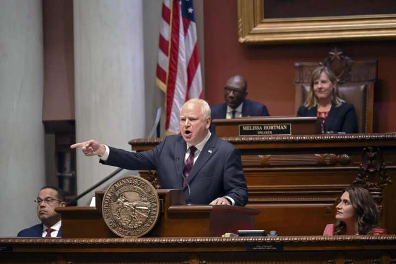
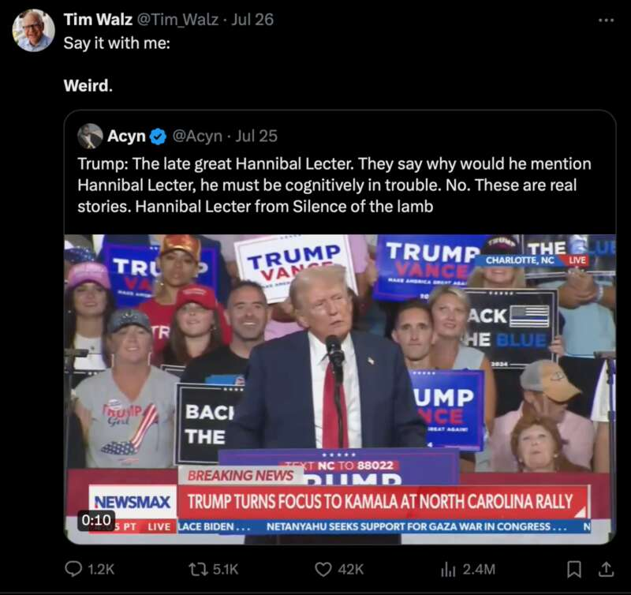
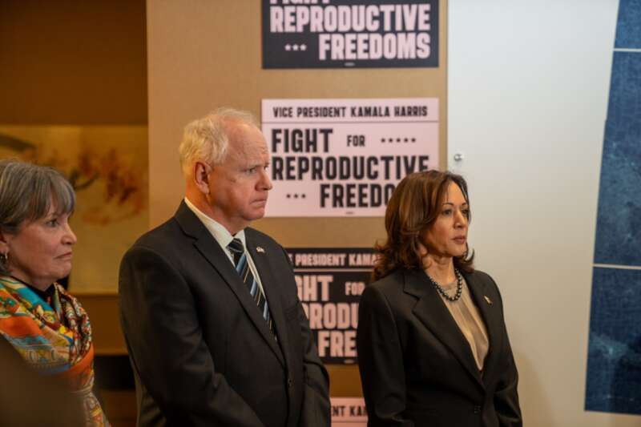
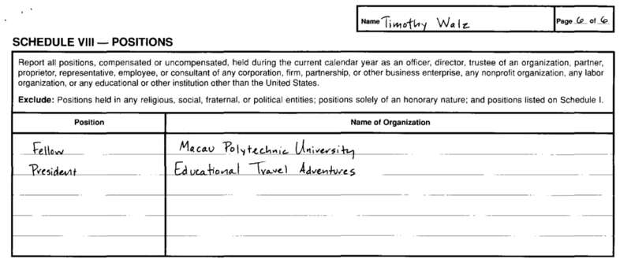
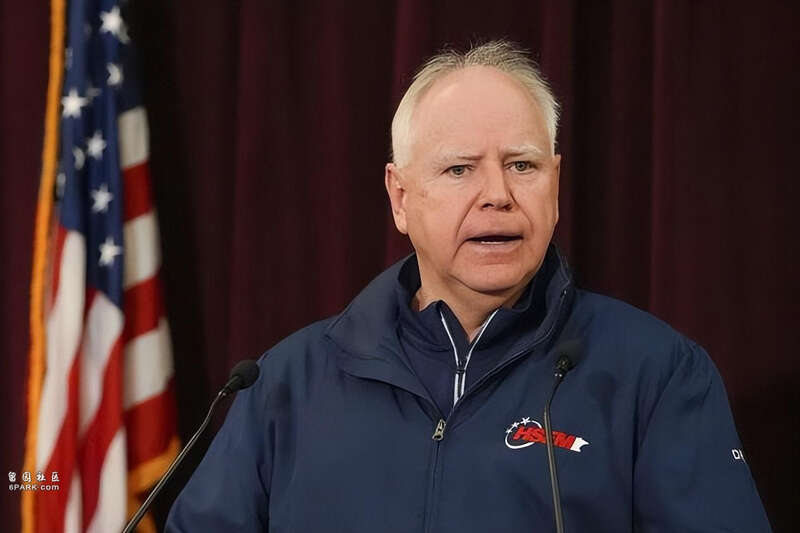

美国有线电视新闻网 (CNN) 报道，知情人士透露哈里斯选择沃尔兹作为竞选伙伴后，特朗普的团队开始攻击明尼苏达州州长蒂姆·沃尔兹。
特朗普竞选团队消息人士称，他们相信选择沃尔兹将证明哈里斯是激进自由主义者的观点。沃尔兹已成为自由派的宠儿。
竞选团队已经开始围绕哈里斯对沃尔兹的决定编造说法，一位消息人士称，哈里斯“向反犹太、反以色列的左派屈服，选择了像她这样危险的自由主义者”。
在社交媒体上，特朗普竞选团队和超级政治行动委员会MAGA Inc开始推广其对沃尔兹收集的一些研究，称他为“无能的自由主义者”。
美国全国广播公司（NBC）报道，在给支持者的一封筹款电子邮件中，特朗普竞选团队对沃尔兹进行了猛烈攻击，声称如果民主党在今年秋天获胜，这位明尼苏达州州长将“让世界陷入地狱”。
电子邮件继续说道：“甚至比危险的自由派、腐败的卡玛拉·哈里斯更糟糕——他就是那么糟糕。”
哈里斯副手出炉！曾在中国任教，近年最有政绩的民主党州长
美国有线电视新闻网 (CNN) 报道，知情人士透露哈里斯选择沃尔兹作为竞选伙伴后，特朗普的团队开始攻击明尼苏达州州长蒂姆·沃尔兹。
特朗普竞选团队消息人士称，他们相信选择沃尔兹将证明哈里斯是激进自由主义者的观点。沃尔兹已成为自由派的宠儿。
竞选团队已经开始围绕哈里斯对沃尔兹的决定编造说法，一位消息人士称，哈里斯“向反犹太、反以色列的左派屈服，选择了像她这样危险的自由主义者”。
在社交媒体上，特朗普竞选团队和超级政治行动委员会MAGA Inc开始推广其对沃尔兹收集的一些研究，称他为“无能的自由主义者”。
美国全国广播公司（NBC）报道，在给支持者的一封筹款电子邮件中，特朗普竞选团队对沃尔兹进行了猛烈攻击，声称如果民主党在今年秋天获胜，这位明尼苏达州州长将“让世界陷入地狱”。
电子邮件继续说道：“甚至比危险的自由派、腐败的卡玛拉·哈里斯更糟糕——他就是那么糟糕。”
哈里斯副手出炉！曾在中国任教，近年最有政绩的民主党州长
▎明尼苏达州州长蒂姆·沃尔兹（Tim Walz）
编者按
据美联社、CNN报道，知情人士称，哈里斯决定选择明尼苏达州州长蒂姆·沃尔兹（Tim Walz）为民主党副总统候选人。蒂姆·沃尔兹有什么故事？他何以在诸位副手候选人中脱颖而出？他的加入会给哈里斯乃至整个美国大选带来什么影响？《凤凰大参考》综合外媒信息，为您解读。
文｜《凤凰大参考》作者 黄舒琪
编辑丨宋东泽 张啸文
“最真实的普通人”
“坦白来讲，很多政客都不是普通人，”美国枪支管制活动家、沃尔兹的支持者戴维·霍格（David Hogg）这样说，“他们就是不知道如何与正常人交谈。”显然，蒂姆·沃尔兹（Tim Walz）不属于这类政客。
1964年4月6日，沃尔兹出生于内布拉斯加州西点的一个农村社区，作为公立学校管理人员和社区活动家的父母向他灌输了公共服务的重要性、对邻居的慷慨以及为共同利益而努力的价值观，他说自己“亲眼目睹了政府如何帮助家庭”。高中毕业后，沃尔兹加入了美国陆军国民警卫队，24年后以军士长的身份退休，是有史以来在国会任职的军衔最高的士兵。
▎ 1981年蒂姆·沃尔兹在佐治亚州训练期间的照片
他在查德隆州立大学获得社会科学教育学士学位，并在明尼苏达州立大学曼卡托分校获得教育领导力硕士学位。在进入政界之前，沃尔兹在明尼苏达州曼卡托的一所高中担任地理教师和橄榄球教练，期间带领球队获得学校的第一个州冠军。1999年，他成为该学校第一个同直联盟（Gay-Straight Alliance）分会的指导老师，那时民主党人还没有在全国范围内支持同性恋权利。
他给人的印象是一个直言不讳的老师、美国青少年橄榄球教练，就像《华盛顿邮报》评价的那样，“他在进入政界以前已经拥有了一个完整的人生”。
▎8月5日，沃尔兹在社交媒体平台上发文感谢明尼苏达维京人队邀请他参加训练营。早在高中任教时，他曾担任学校的橄榄球队教练。图源X @Governor Tim Walz
前美国北达科他州参议员海迪·海特坎普（Heidi Heitkamp）说，沃尔兹的坦率之所以有效，是因为它是真实的，这与特朗普的副总统人选形成鲜明对比：“J.D.万斯有一种不真实的感觉，这与蒂姆·沃尔兹截然相反。蒂姆是你将要遇到的最真实的普通人。我了解他的计划，因为我有像他一样的高中老师，他们关心学生和他们的社区。”
这位60岁的州长在国会大厦显得很低调，经常穿牛仔裤、T恤和棒球帽。“他身上有某种东西，不像那种从中央选拔出来的方下巴政客”，曾在立法机构与沃尔兹共事的前民主农民劳动党（Democratic-Farmer-Labor Party，简称DFL）参议员杰夫·海登（Jeff Hayden）说。“他是最真实的自己，这是现在吸引很多人的地方。”
如何把明尼苏达州带入美国幸福感前三？
在美国各州幸福感排名中，明尼苏达常年居于前三位，而这与州长蒂姆·沃尔兹的政绩密不可分。
2006年，沃尔兹首次竞选并当选为美国众议院议员，在任期间积极推动农业、退伍军人事务和教育政策改革。2018年，他成功竞选为明尼苏达州州长，并在2022年成功连任。
▎蒂姆·沃尔兹赢得2022年明尼苏达州州长选举
沃尔兹的军事背景为他的政治生涯增添了独特的视角和信誉。他在军队中服役24年，参与了多次国内外任务，获得了多项军事荣誉，这些经历使他在退伍军人事务和国家安全政策方面具有特别的权威。作为一名前教育领导者，沃尔兹在教育政策上的成就同样显著。在担任州长期间，他推动了多项重要的教育改革，包括增加公立学校资金、提高教师工资和扩大职业培训机会。他还支持降低大学学费和加强学前教育的立法，致力于为所有学生提供平等的教育机会。

▎2023年4月19日，沃尔兹在明尼苏达州议会上发表讲话。图源美联社
在过去的一年里，沃尔兹的全国知名度不断提高，尤其是在2023年明尼苏达州立法会议结束后，他得到了广泛的赞誉。在这场被沃尔兹本人形容为“也许是明尼苏达州历史上最成功的立法会议”中，取得了包括为所有公立学校学生提供免费学校餐、堕胎保护和更严格的枪支措施等一系列进展，大受前总统奥巴马的赞誉，他在社交媒体上发帖称，“这些法律将给明尼苏达人的生活带来真正的改变”。
也许是哈里斯的最佳拍档
有意思的是，沃尔兹也以一种独特的方式领导了哈里斯近期的竞选宣传，他在电视采访中用“怪异（weird）”这个新的词来对特朗普进行尖锐但又不失亲和力的抨击，把对共和党人的攻击路线从特朗普对民主的模糊威胁转变为与“这些非常怪异的人”作斗争，在社交媒体中红极一时。不少专栏作家认为这个词对于共和党候选人来说“伤害性不大、侮辱性极强”。

▎7月26日，沃尔兹转发一则特朗普的演讲视频，并配文“跟我一起说：怪异”。分析人士表示，沃尔兹成功地以一种民主党人认为有效的新方式给特朗普贴上了标签。
沃尔兹在政策议题上也与哈里斯高度契合，他重视个人自由和公共教育，强调清洁能源经济的发展，这些都与哈里斯的竞选主张相一致。正如沃尔兹在7月23日讨论他对副总统卡马拉·哈里斯的支持时所说：“我认为看到了我们共同的价值观，看到了一个真正涉及我们关心的问题的议程。”

▎2024年3月，沃尔兹与哈里斯在明尼苏达州州府圣保罗。图源X @Governor Tim Walz
更重要的是，来自加利福尼亚州的哈里斯在农村和中西部地区影响力较小，而沃尔兹则恰好能弥补她在这些地区的劣势。明尼苏达州在总统选举中的战略地位不可忽视，在这样一个通常倾向共和党的州中，沃尔兹赢得了两次州长选举，表明他能够有效地吸引和动员中西部选民，为哈里斯在这一关键地区的选情提供重要支持。
在特朗普选择出身“铁锈地带”的万斯作为竞选搭档后，沃尔兹的优势变得更加显而易见，哈里斯或许能借助沃尔兹的中西部州背景抵消万斯的优势，迫使共和党在中西部州投入更多精力和竞选资源而无暇顾及其他选民群体，尤其是郊区选民。
▎沃尔兹在明尼苏达州民主党竞选拉票活动中发表讲话。图源《纽约时报》
然而，沃尔兹在疫情期间动用紧急权力、实施口罩强制令和关闭企业的行为也招致不少批评。另外，2020年明尼苏达州多地因弗洛伊德事件发生骚乱，沃尔兹被外界质疑处置不力。美国短新闻网站Axios报道称，若沃尔兹成为哈里斯竞选副手，共和党人或借这些争议向沃尔兹发难。
首批被授权在中国教高中的美国教师
鲜为人知的是，在获得教育学士学位后，哈佛大学为沃尔兹提供了一个在中国任教的机会，让他得以以新的视角看待全球教育。1989年至1990年期间，沃尔兹在中国工作，是首批获准在中国高中任教的美国教育工作者团体成员之一。
直到现在，沃尔兹还会讲一点中文。

▎ 截自美国众议院2007年的财务披露报表，沃尔兹曾担任澳门理工大学的客座研究员以及创立了“教育旅行冒险”公司。
回国后，蒂姆·沃尔兹抓住机会，在美中学生之间开展合作项目，成立了一家名为“教育旅行冒险”的小公司，通过这家公司，他每年为美国高中生组织一次中国教育旅行。该业务包括一个奖学金项目，无论他们的经济状况如何，学生们都被允许在中国旅行和学习。
回到内布拉斯加州是沃尔兹生命中的关键时刻，他遇到了在同一所学校教书的格温·惠普尔（Gwen Whipple）。沃尔兹和格温于1994年结婚，他们带着60个美国学生一同前往中国蜜月旅行，由于学生中男女数量为奇数，夫妻俩甚至不睡在一个房间。后来他们搬回格温的家乡明尼苏达州，并在同一所高中任教。
▎沃尔兹和家人在一起
沃尔兹还曾担任澳门理工大学的国际关系客座研究员，他认为这一职位有助于他“加深对中国独特国际地位的了解”。
沃尔兹的独特背景给予他观察中国的真实视角，而能否在中美关系极其艰难的当下继续推动中美人文交流，也考验着他的智慧。
哈里斯或敲定副总统人选：深受犹太财阀青睐，和克林顿家走得近
据《参考消息》报道，美国民主党总统候选人哈里斯最迟将于北京时间8月6日晚间公布自己的副总统人选，并将在公布结果数小时后与搭档首次公开亮相。目前，这个“副手”人选已经缩小到了宾夕法尼亚州州长夏皮罗和明尼苏达州州长沃尔兹两人。而大部分分析家都认为，这其中，宾州州长夏皮罗成为哈里斯副手的可能性更高。
（资料图：哈里斯）
据美国媒体报道，夏皮罗今年51岁，是一名“温和派”民主党人，学历为法学博士，在宾州颇受欢迎，此前在州长选举中以56%的得票率击败共和党对手。而在竞选副总统一事上，他也确实有着不小的优势。
（资料图：夏皮罗）
首先，他是犹太人，这自然让他更容易受到犹太财阀的青睐。他还曾在州长选举中从犹太裔亿万富翁布隆伯格手里拿到了100万美元的竞选捐款。而布隆伯格正是目前哈里斯竞选团队在努力争取的捐款人。
其次，他在民主党内声望不错，据称与克林顿夫妇关系匪浅。这可能会让他更容易得到民主党内“大佬”们的支持。
第三，他在宾州当地也有不错的群众基础，曾经当过州众议员、蒙哥马利县委员会主席、州总检察长，最后当上州长，政治生涯几乎都在宾州度过。而宾州是近年大选中的“战场州”，手握19张选举人票，是决定结果的关键州之一，也是哈里斯和特朗普都必须赢的一个州。所以哈里斯要是选择他做副手，那民主党就将在宾州有不小的优势。
第四，他也曾经当过州检察长，与哈里斯算是同个系统出身，沟通起来可能也会更顺畅。
（资料图：夏皮罗与哈里斯）
不过他的短板也是显而易见的。
最重要的就是其犹太人的身份，以及非常明确的“亲以”立场。比如在不久前美国大学校园蔓延亲巴勒斯坦的抗议活动时，他就曾呼吁宾夕法尼亚大学拆除抗议营地。这可能会让哈里斯流失不少阿拉伯裔、穆斯林及年轻选民的选票。此前已经有挺巴勒斯坦的组织发起了反对他的线上活动，也有部分民主党活动人士在公开呼吁哈里斯不要选择夏皮罗。
（宾夕法尼亚大学的“挺巴”营地）
明尼苏达州州长沃尔兹则有农村和军队背景，17岁起在国民警卫队服役了24年，今年60岁。他在众议院任职了12年，是几名副手候选人中，国会经验最为丰富的，而且在农业领域和军人事务领域有一定的影响力。所以如果他成为哈里斯的副手，应该将会帮助哈里斯在农村地区和退伍军人中间提高影响力，而且能帮哈里斯在国会拓展人脉。

（资料图：沃尔兹）
在哈里斯成为民主党候选人后，民主党正在快速追平两党之间因为“拜登电视辩论表现不佳”、“特朗普枪击事件”等而拉大的差距。
哥伦比亚广播公司8月5日的民调显示，哈里斯的支持率已经达到了50%，超过了特朗普的49%。另外，哈里斯还在24小时内筹集了8100万美元，打破了单日筹款金额的纪录，这都让哈里斯的胜算大增。再加上特朗普选择的万斯如今评价不佳，11月的美国总统大选，恐怕仍然会是一场激烈的争夺。